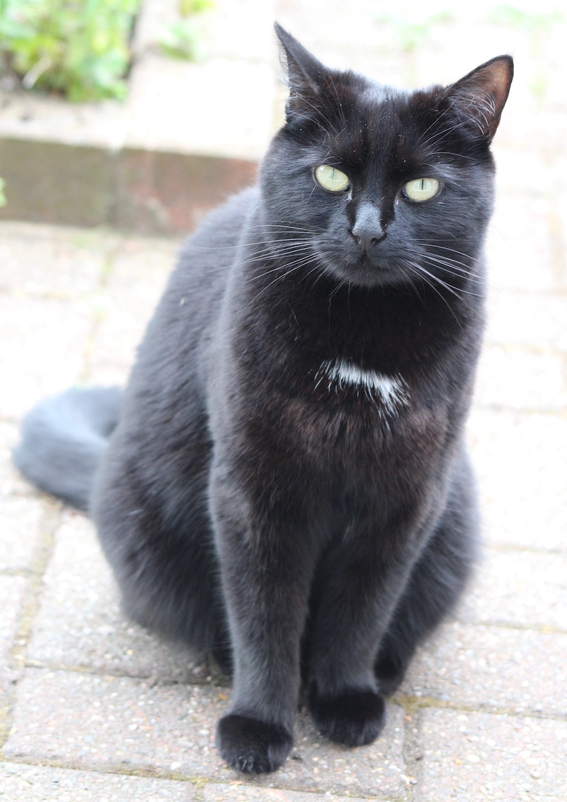

Killer Queen
[Jak]: Do you like poems Nikki?
[Nikita]: Erm. I’m not sure. I’ve never tasted one. What are they like?
[Jak]: Oh, Nikki you’re so f…
[Jak]: Ahem. I meant something like the poem, Who Killed Cock Robin? (opens in a new tab).
Who killed Cock Robin?
I, said the sparrow,
With my bow and arrow,
I killed Cock Robin.
[Jak pauses for breath]
[Kuma]: Excuse me! I'm not having a sparrow claiming my kill... of all the cheek!
[Kuma]: I want it on record. I killed cock robin and left him by the front door! Our hoomans got a bit of a fright when they were clearing the dead leaves from the path. [Kuma sniggers]
[Jak]: I thought I detected something in that pile but we’re never allowed to linger outside long.
[Kuma]: Well you shouldn’t have made a nuisance of yourselves should you. I’m allowed outdoors as often and as long as I want.
[Jak]: It’ll be because they don’t like you as much as me and Nikki and don’t want you hanging around. I’ve heard them complaining about you smelling bad.
[Nikita]: And they have to change clothes and get showered after cuddling her. I’ve seen them!
[Kuma]: Yes, well, it's not every time. And I’m still not as gruesome as you. You scoffed old stuff from the compost bin. Vegetables… yuk! And I heard you tried some coughy. They feed you enough. Why do you need to chow down on germs?
[Jak]: Kuma, hang on. Nikki drank some coffee that was left over. It’s a drink. The hoomans love it.
[Nikita]: Dad forgot about it when he went off to save...what was it?...erm...an animal in trouble somewhere... He doesn’t mind sharing things with me.
[Jak]: Not that though Nikki. I don’t think it’s good for them, never mind you. It smells dreadful
[Nikita]: Oh well I liked it and it smells better than Kuma!
[Kuma]: I can't believe you losers... you call them Dad and Mum? They're staff!